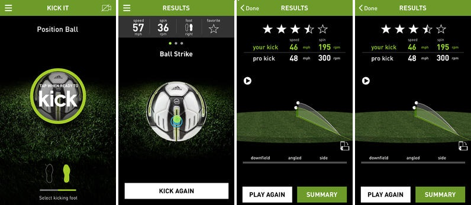

miCoach Smart Ball
Içerisinde hareket sensörleri bulunan Smart Ball topun hizinda aldigi ivmeye kadar bilgiyi kaydederek akilli telefona gönderiyor.Bir yildan uzun bir süredir gelistirmesi yapilan ürün su an için iOS tabanli cihazlar olan iPhone, iPod ve iPad'le çalisabiliyor. Özellikle antremanlarda faydali olacak Smart Ball ile futbolcularin yeteneklerini gelistirmeleri daha kolaylasacak görünüyor.
Topun hareketini sadece yazisal degil grafiksel olarak göstermesiyle görselligi ön plana çikan uygulama Smart Ball ile bluetooth üzerinden baglanti kuruyor. Kullanicinin arkadaslariyla sonuçlari paylasabilmesine olanak taniyan uygulama böylece performansi artirmak için yarismayi da ön plana çikariyor.
Topun havasinin inmesine alisan bir neslin topun sarjinin bitmesine nasil alisacagi merak konusu. Smart Ball'un dolu sarjla ne kadar kullanildigi belirtilmiyor ama paketinin içinde sarj aleti var dolayisiyla maçin ortasinda sarj için ara verebilirsiniz.